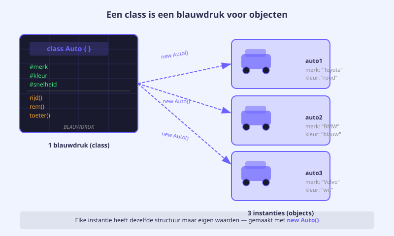
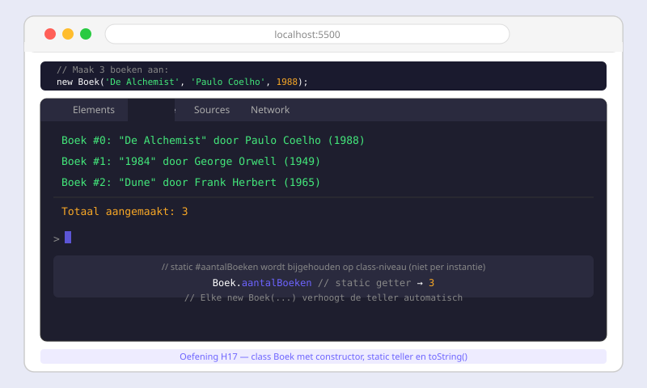

JavaScript Klassen
- Uitleggen waarom een klasse beter is dan meerdere losse objectliterals
- Een klasse definiëren met het
class-keyword en instanties aanmaken metnew - Een
constructorschrijven diethis-velden initialiseert - Private fields declareren met
#en de toegang beveiligen - Methodes schrijven die gebruik maken van
this.#veld - Getters (
get) en setters (set) gebruiken met validatie - Static fields en static methodes onderscheiden van instantie-leden
17.1 Van objectliteral naar class
Het probleem met objectliterals
In vorige hoofdstukken heb je gewerkt met objectliterals — objecten die je rechtstreeks aanmaakt met accolades. Dat werkt prima voor één object:
// Één auto aanmaken gaat prima
let auto1 = {
merk: "Honda",
kleur: "rood",
versnelling: 0
};Maar wat als je tien auto's nodig hebt? Dan kopieer je de structuur tien keer, met alle kansen op fouten en inconsistentie:
// Copy-paste = slecht
let auto1 = { merk: "Honda", kleur: "rood", versnelling: 0 };
let auto2 = { merk: "BMW", kleur: "blauw", versnelling: 0 };
let auto3 = { merk: "Audi", kleur: "zwart", versneliing: 0 }; // tikfout!Er is geen garantie dat elk object dezelfde structuur heeft. Als je later een veld wil toevoegen, moet je dat overal aanpassen.
De oplossing: een klasse als blauwdruk
Een klasse is een blauwdruk of sjabloon. Je definieert de structuur eenmalig, en dan maak je er zoveel instanties (= objecten) van als je wil.
class Auto {
// (inhoud volgt in de volgende secties)
}
// Instanties aanmaken met het 'new' keyword
let auto1 = new Auto("Honda", "rood");
let auto2 = new Auto("BMW", "blauw");
let auto3 = new Auto("Audi", "zwart");Een klassenaam begint altijd met een hoofdletter (Auto, Boek, Gebruiker). Instanties beginnen met een kleine letter (auto1, mijnBoek).

17.2 Constructor & private fields
De constructor aanmaken
De constructor is een speciale methode die automatisch uitgevoerd wordt op het moment dat je new gebruikt. Er is slechts één constructor per klasse.
class Auto {
constructor(merk, kleur) {
// 'this' verwijst naar het nieuwe object dat aangemaakt wordt
this.merk = merk;
this.kleur = kleur;
this.versnelling = 0; // standaardwaarde
}
}
let mijnAuto = new Auto("Honda", "rood");
console.log(mijnAuto.merk); // "Honda"
console.log(mijnAuto.versnelling); // 0Private fields met #
In het voorbeeld hierboven zijn merk, kleur en versnelling publieke velden. Iedereen kan ze van buitenaf lezen én overschrijven — ook met ongeldige waarden:
mijnAuto.merk = "Ferrari"; // geen probleem... maar is dit gewenst?
mijnAuto.versnelling = 99; // gevaarlijk!Om data te beschermen gebruik je private fields met een # vóór de naam. Ze zijn alleen toegankelijk vanuit de klasse zelf.
class Auto {
// Private fields declareer je bovenaan de klasse
#merk;
#kleur;
#versnelling;
constructor(merk, kleur) {
this.#merk = merk;
this.#kleur = kleur;
this.#versnelling = 0;
}
}
let mijnAuto = new Auto("Honda", "rood");
console.log(mijnAuto.#merk); // SyntaxError! #merk is privaatVolledig voorbeeld: de Car-klasse
De Car-klasse gebruikt dit patroon volledig — private fields, een constructor met this.#veld-toewijzingen, en een statisch veld voor auto-ID's:
class Car {
static #lastId = 0; // teller geldt voor de klasse, niet per instantie
#id;
#brand;
#color;
#maxSpeed;
#started;
#gear;
constructor(brand, color, maxSpeed) {
this.#id = Car.#lastId++; // uniek ID per auto
this.#brand = brand;
this.#color = color;
this.#maxSpeed = maxSpeed;
this.#started = false;
this.#gear = 0;
}
}17.3 Methodes
Methodes zijn functies die bij een klasse horen. Je schrijft ze zonder het function-keyword — de naam alleen is voldoende.
class Auto {
#merk;
#gestart;
#versnelling;
constructor(merk) {
this.#merk = merk;
this.#gestart = false;
this.#versnelling = 0;
}
start() {
this.#gestart = true;
console.log(`${this.#merk} is gestart.`);
}
schakelOp() {
this.#versnelling++;
console.log(`Versnelling: ${this.#versnelling}`);
}
rijd() {
if (this.#gestart) {
console.log(`${this.#merk} rijdt in versnelling ${this.#versnelling}.`);
} else {
console.log(`${this.#merk} is niet gestart.`);
}
}
}
let auto = new Auto("Honda");
auto.start(); // Honda is gestart.
auto.schakelOp(); // Versnelling: 1
auto.rijd(); // Honda rijdt in versnelling 1.Methodes kunnen:
- Private fields van
thislezen en schrijven - Andere methodes van dezelfde klasse aanroepen via
this.methode() - Parameters ontvangen zoals gewone functies
17.4 Getters en setters
Waarom getters en setters?
Private fields beschermen je data — maar dan kan je ze ook niet meer lezen van buitenaf. De oplossing is een getter: een methode die je aanroept als een gewone eigenschap (zonder haakjes).
class Auto {
#merk;
constructor(merk) {
this.#merk = merk;
}
// Getter: lezen zonder haakjes
get merk() {
return this.#merk;
}
}
let auto = new Auto("Honda");
console.log(auto.merk); // "Honda" — geen haakjes nodig!Setter met validatie
Een setter laat toe om een private field te schrijven via een gewone toewijzing — maar je kan eerst valideren of de waarde geldig is:
class Auto {
#gaspedalPositie;
constructor() {
this.#gaspedalPositie = 0;
}
get gaspedalPositie() {
return this.#gaspedalPositie;
}
set gaspedalPositie(nieuweWaarde) {
if (nieuweWaarde < 0 || nieuweWaarde > 1) {
throw "Gelieve een waarde tussen 0 en 1 in te geven.";
}
this.#gaspedalPositie = nieuweWaarde;
}
}
let auto = new Auto();
auto.gaspedalPositie = 0.7; // OK
console.log(auto.gaspedalPositie); // 0.7
auto.gaspedalPositie = 1.5; // Gooit een fout!auto.gaspedalPositie = 0.7 ziet eruit als een gewone toewijzing, maar de setter-logica wordt toch uitgevoerd. Dat is de kracht van setters: transparante validatie.
17.5 Static fields en methodes
Static vs. instantie
Tot nu toe waren alle fields en methodes gebonden aan een instantie — elke new Auto() heeft zijn eigen #merk, #kleur, enzovoort.
Een static field of methode hoort bij de klasse zelf, niet bij een individueel object.
class Auto {
static aantalAutos = 0; // gedeeld over alle instanties
#merk;
constructor(merk) {
this.#merk = merk;
Auto.aantalAutos++; // teller verhogen bij elke new
}
static toonTotaal() {
console.log(`Er zijn ${Auto.aantalAutos} auto's aangemaakt.`);
}
}
let a1 = new Auto("Honda");
let a2 = new Auto("BMW");
let a3 = new Auto("Audi");
Auto.toonTotaal(); // Er zijn 3 auto's aangemaakt.
// a1.toonTotaal(); // Fout! toonTotaal is een klasse-methodePrivate static: het ID-patroon
In de Car-klasse wordt een private static veld gebruikt om auto-ID's te beheren. Het static veld #lastId bestaat maar één keer, ongeacht hoeveel Car-objecten er zijn:
class Car {
static #lastId = 0; // privaat: van buiten niet leesbaar of wijzigbaar
#id;
constructor(brand, color, maxSpeed) {
this.#id = Car.#lastId++; // elke auto krijgt een uniek oplopend ID
// ...
}
get id() { return this.#id; }
}
let c1 = new Car("Honda", "rood", 180);
let c2 = new Car("BMW", "blauw", 240);
console.log(c1.id); // 0
console.log(c2.id); // 1Oefeningen
Boek
Maak een klasse Boek met de volgende vereisten:
Private fields:
#titel— de titel van het boek#auteur— de naam van de auteur#jaar— het jaar van publicatie
Static:
static #aantalBoeken = 0— teller die bijhoudt hoeveelBoek-instanties zijn aangemaaktstatic get aantalBoeken()— getter om de teller te lezen
Constructor: constructor(titel, auteur, jaar) — wijst de parameters toe en verhoogt de static teller.
Getters: get titel(), get auteur(), get jaar()
Methode toonInfo(): Logt een nette zin: "De alchemist" van Paulo Coelho (1988)
Validatie in de constructor: Als jaar kleiner is dan 1400 of groter dan het huidige jaar, gooi je een foutmelding: "Ongeldig jaar."
// Verwachte werking:
let b1 = new Boek("De alchemist", "Paulo Coelho", 1988);
let b2 = new Boek("1984", "George Orwell", 1949);
let b3 = new Boek("Sapiens", "Yuval Noah Harari", 2011);
b1.toonInfo(); // "De alchemist" van Paulo Coelho (1988)
b2.toonInfo(); // "1984" van George Orwell (1949)
b3.toonInfo(); // "Sapiens" van Yuval Noah Harari (2011)
console.log(Boek.aantalBoeken); // 3Maak drie Boek-instanties naar keuze. Roep op elk toonInfo() aan. Toon daarna de static teller via Boek.aantalBoeken.
Probeer ook: wat gebeurt er als je new Boek("Test", "Auteur", 1200) aanmaakt? Welke foutmelding verschijnt er in de console?

Temperatuur
Maak een klasse Temperatuur met:
- Private field
#graden(in Celsius) - Constructor die de begintemperatuur instelt (standaard 0)
- Getter
get graden()— geeft de waarde in Celsius - Setter
set graden(waarde)— valideert dat de waarde niet lager is dan −273.15 (absoluut nulpunt) - Methode
naarFahrenheit()— returnt de temperatuur omgezet naar Fahrenheit:C * 9/5 + 32 - Methode
toonInfo()— logt:"22 °C = 71.6 °F"
Test je klasse met minstens 3 temperaturen, waaronder een negatieve waarde en de poging om −300 °C in te stellen.
Huistaak
Opdracht: Klasse BankRekening
Maak een klasse BankRekening met de volgende vereisten:
Deel 1 — Structuur (4 punten)
- Private fields
#rekeninghouderen#saldo - Een static teller
#aantalRekeningenmet bijbehorende static getter - Constructor die rekeninghouder en beginbedrag instelt (standaard saldo = 0)
- Getters voor
rekeninghouderensaldo
Deel 2 — Methodes (3 punten)
- Methode
storten(bedrag)— voegt het bedrag toe aan het saldo. Validatie: bedrag moet groter zijn dan 0. - Methode
afhalen(bedrag)— haalt het bedrag af van het saldo. Validatie: bedrag moet groter zijn dan 0 én mag het saldo niet overschrijden. - Methode
toonSaldo()— logt een nette zin:"[naam]: €[saldo]"
Deel 3 — Gebruik (3 punten)
- Maak minstens 2 rekeningen aan
- Voer stortingen en afhalingen uit, roep telkens
toonSaldo()aan - Probeer een ongeldig afhaling (boven het saldo) en toon de foutmelding
Vragenlijst
Controleer of je de leerstof van dit hoofdstuk begrijpt.
Wat is de juiste naamconventie voor een JavaScript klasse?
Welke uitspraak over private fields (#) is correct?
Wat doet de constructor in een klasse?
Hoe roep je een getter aan?
Wat is het verschil tussen een static methode en een gewone methode?
Welke code gooit een foutmelding als de setter validatie bevat voor [0, 1]?